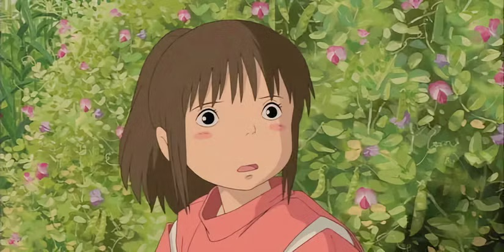
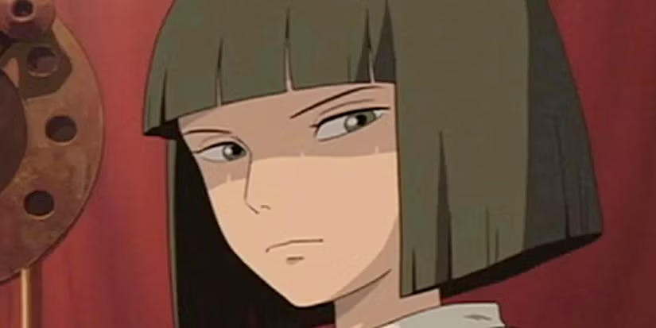
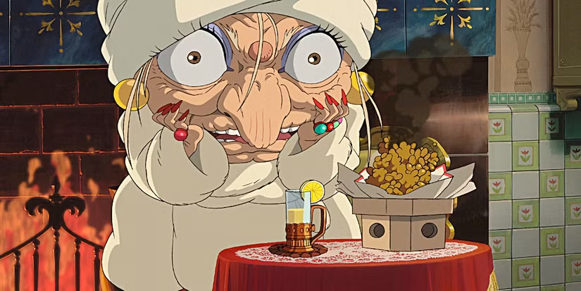
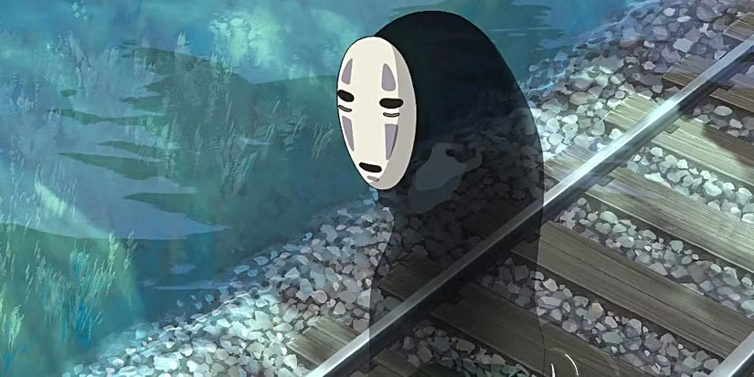
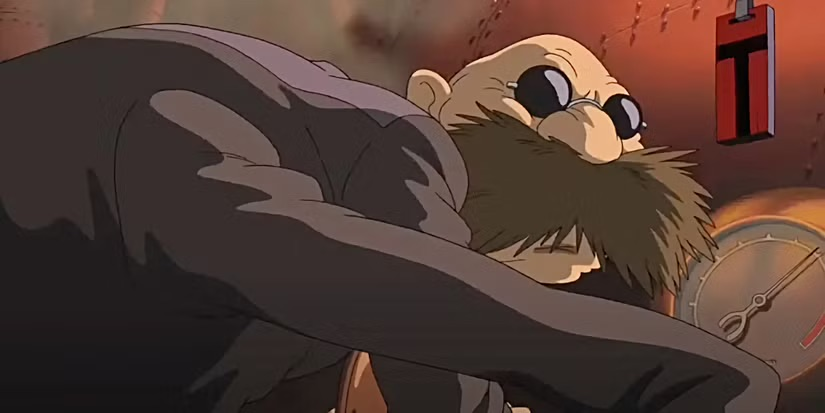
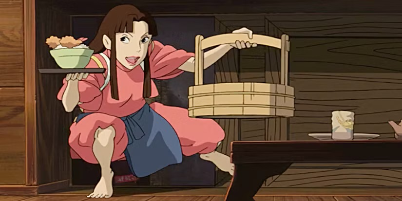
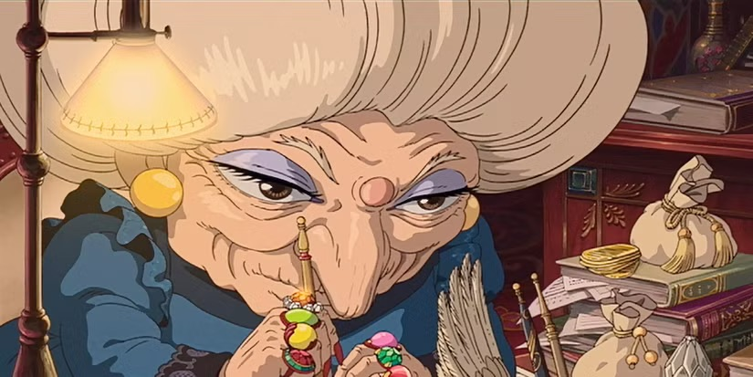
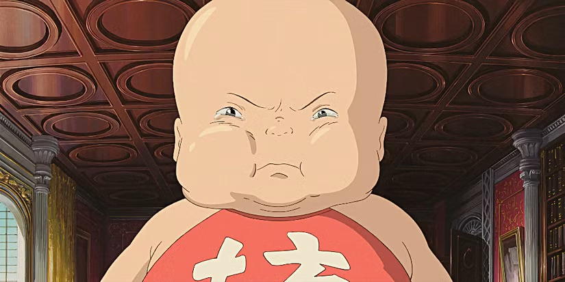

Chihiro Ogino/Sen
Protagonist
The 10-year-old protagonist. She transforms from a sullen girl into a brave, self-sufficient person, ultimately saving her parents and maintaining her identity.
The characters in Spirited Away are imaginative, complex, and play key roles in Chihiro’s journey through the spirit world.

The 10-year-old protagonist. She transforms from a sullen girl into a brave, self-sufficient person, ultimately saving her parents and maintaining her identity.

A river spirit who first befriends Chihiro. He is crucial for his help in navigating the spirit world and for his own story of rediscovering his true name and past.

The demanding, greedy witch who rules the bathhouse and steals names to enslave employees. She serves as the main antagonist and a mother figure to her spoiled son, Boh.

A lonely spirit who adopts the greed and corruption of the bathhouse. He reflects the film’s themes of loneliness and desire.

The spider-like operator of the boiler room. He is the first to show kindness to Chihiro and helps her obtain a job.

A senior worker at the bathhouse who acts as an older sister figure to Chihiro and helps protect her throughout the story.

Yubaba’s identical twin who represents wisdom and kindness. She teaches Chihiro lessons about compassion and self-worth.

Yubaba’s giant spoiled baby, who matures significantly after being transformed into a mouse and joining Chihiro’s adventure.